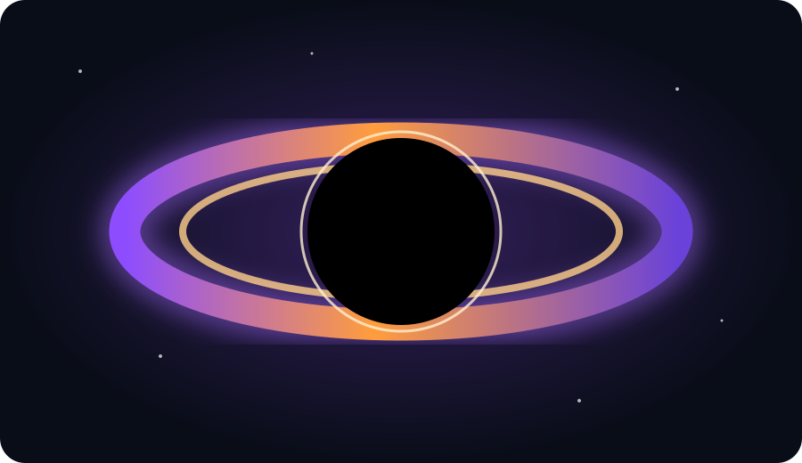

¿QUÉ ES UN AGUJERO NEGRO?
Es una región del espacio donde la gravedad es tan intensa que, dentro del horizonte de sucesos, nada puede escapar.
TON 618 es un cuásar extremadamente luminoso asociado a un agujero negro supermasivo. Se encuentra a una enorme distancia de la Tierra y es conocido por su extraordinaria masa estimada.

Los científicos estudian la luz del cuásar y el movimiento del material cercano para conocer las propiedades de este sistema.
Es una región del espacio donde la gravedad es tan intensa que, dentro del horizonte de sucesos, nada puede escapar.
Estudiar objetos como TON 618 ayuda a comprender cómo crecen los agujeros negros y cómo evolucionan las galaxias.